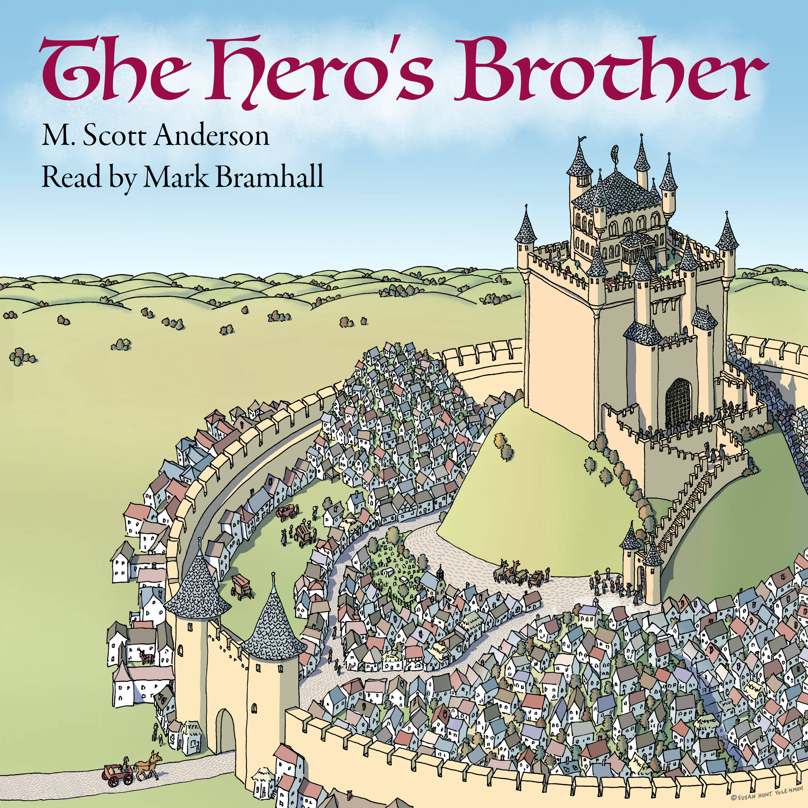

Map
SELECT A CHAPTER OR SCROLL
00 - Cover
01 - Conall
02 - Confessor Guthlac's Pupil
03 - Ye Olde
04 - Nine Men's Morris
05 - The Singing Gamester
06 - One on One
07 - A Staggering Blow
08 - And Back Again
09 - The Boon
10 - To a Manor Borne
11 - Defective
12 - The Expected Shipwreck
13 - No Such Thing as a Free Lunch
14 - Who Had What?
15 - Let the Games Begin
16 - In the Wee Hours
17 - The Battle Cry
18 - Never a Cold Shoulder
19 - Summer's Discontents
20 - Taking the Lead
21 - An Awkward Suit
22 - A Motley Crew
23 - Remembrance of Desserts Past
24 - The Head Mark
25 - The Wright Thing
26 - Casting Aspersions
27 - Hell on the Ninth of the Circle
28 - Stopping Short
29 - Only Connecting
30 - The Tors of the Decoray
31 - A Balancing Act
32 - No Blessing in Disguise
33 - The Prized Prisoner
34 - A Deadly Conspiracy
35 - A Diminished Seventh
36 - True Visions at the Horn Gate
37 - Twenty Seconds
38 - The Grain Exchange
39 - The Narrow Tower
40 - Wasting Away
41 - Bedlam
42 - Keeping a Low Low Profile
43 - With the Forty-Seven
44 - In Their Cups
45 - Noman is an Island
46 - Cutting to the Chase
47 - Can You Go Home Again?
48 - The Tax Dodger
49 - Safe for a Spell
50 - Patent Filings
51 - Circling the Square
52 - Darkness Invisible
53 - All Together Now
54 - The Slender Black Sail
55 - Brothers
56 - The Song of Selflessness
57 - The Brother's Hero
58 - Penultimatum
59 - Last Chapter
60 - The Chapter After the Last Chapter
Quadrants
